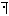
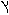
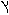
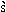

| Vernacular | Romanization |
 |  (alif) or disregarded (alif) or disregarded |
| b | |
 | v (in Yiddish, b) |
 | g |
 | d |
 | h |
 |  (only if a consonant) (only if a consonant) |
|
| (only if a consonant) |
 | z |
 |  |
 |  |
 | y (only if a consonant) |
| final  | k |
 final final  | kh |

| Vernacular | Romanization |
 | l |
 final final  | m |
 final final  | n |
 | s |
 |  (ayin) (ayin) |
| final | p |
 final final  | f |
 final  final  | ts |
 |  |
 | r |
| sh | |
 | |
| t | |
 | t (in Yiddish ) |